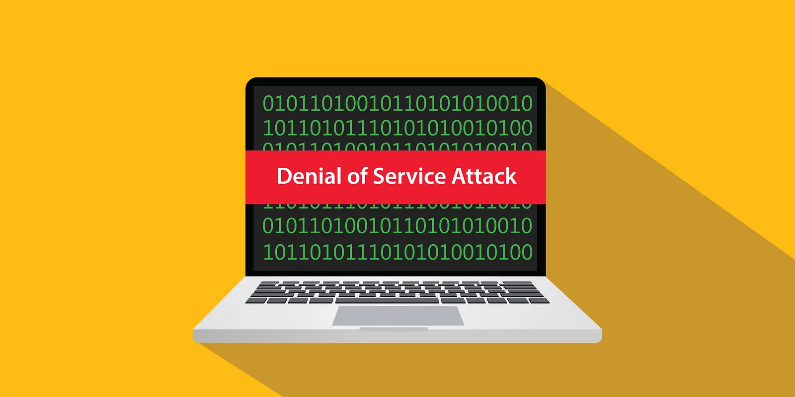
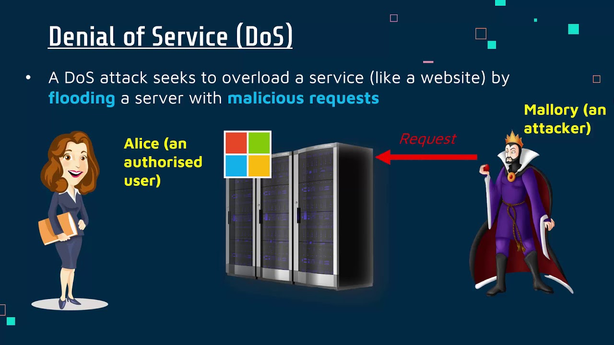
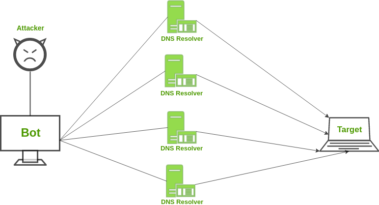
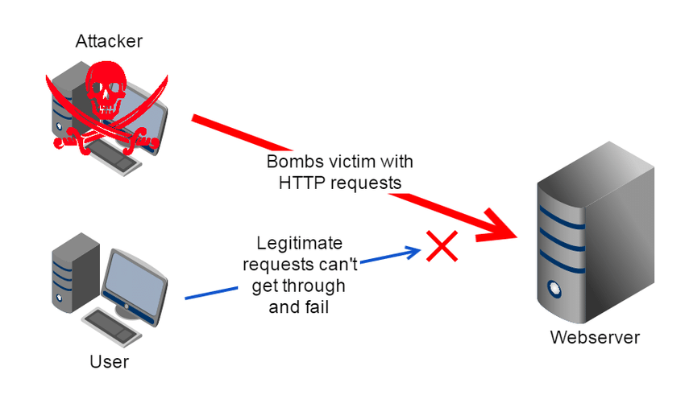

Types Of Attack
Buffer overflow attacks
ICMP flood
SYN flood
What is a denial-of-service attack?
A denial-of-service (DoS) attack is a type of cyber attack in which a malicious actor aims to render a computer or other device unavailable to its intended users by interrupting the device's normal functioning. DoS attacks typically function by overwhelming or flooding a targeted machine with requests until normal traffic is unable to be processed, resulting in denial-of-service to addition users. A DoS attack is characterized by using a single computer to launch the attack.
Distributed denial-of-service (DDoS) attack is a type of DoS attack that comes from many distributed sources, such as a botnet DDoS attack.

How does a DoS attack work?
The primary focus of a DoS attack is to oversaturate the capacity of a targeted machine, resulting in denial-of-service to additional requests. The multiple attack vectors of DoS attacks can be grouped by their similarities.
DoS attacks typically fall in 2 categories:
- Buffer overflow attacks - An attack type in which a memory buffer overflow can cause a machine to consume all available hard disk space, memory, or CPU time. This form of exploit often results in sluggish behavior, system crashes, or other deleterious server behaviors, resulting in denial-of-service.
- Flood attacks - By saturating a targeted server with an overwhelming amount of packets, a malicious actor is able to oversaturate server capacity, resulting in denial-of-service. In order for most DoS flood attacks to be successful, the malicious actor must have more available bandwidth than the target.
-
- ICMP flood - leverages misconfigured network devices by sending spoofed packets that ping every computer on the targeted network, instead of just one specific machine. The network is then triggered to amplify the traffic. This attack is also known as the smurf attack or ping of death.
- SYN flood - sends a request to connect to a server, but never completes the handshake. Continues until all open ports are saturated with requests and none are available for legitimate users to connect to.

How long have DoS attacks been a threat?
A 13-year-old, David Dennis, can claim credit for the first DoS attack in 1974. Dennis wrote a program using the "external" or "ext" command that forced computers at a nearby university research lab to power off.
DoS attacks have since evolved into the more complex and sophisticated "distributed denial of service" (DDoS) attacks that are common today. The biggest attack ever recorded - at that time - targeted code-hosting-service GitHub in 2018.

What are some historically significant DoS attacks?
Historically, DoS attacks typically exploited security vulnerabilities present in network, software and hardware design. These attacks have become less prevalent as DDoS attacks have a greater disruptive capability and are relatively easy to create given the available tools. In reality, most DoS attacks can also be turned into DDoS attacks.
A few common historic DoS attacks include:
- Smurf attack - a previously exploited DoS attack in which a malicious actor utilizes the broadcast address of vulnerable network by sending spoofed packets, resulting in the flooding of a targeted IP address.
- Ping flood - this simple denial-of-service attack is based on overwhelming a target with ICMP (ping) packets. By inundating a target with more pings than it is able to respond to efficiently, denial-of-service can occur. This attack can also be used as a DDoS attack.
- Ping of Death - often conflated with a ping flood attack, a ping of death attack involves sending a malformed packet to a targeted machine, resulting in deleterious behavior such as system crashes.

Who is usually behind DoS attacks?
Attackers typically include hacktivists, hackers whose activity is aimed at promoting a social or political cause; profit-motivated cybercriminals and nation states.
How can you tell if a computer is experiencing a DoS attack?
While it can be difficult to separate an attack from other network connectivity errors or heavy bandwidth consumption, some characteristics may indicate an attack is underway.
Indicators of a DoS attack include:
- A typically slow network performance such as long load times for files or websites
- The inability to load a particular website such as your web property
- A sudden loss of connectivity across devices on the same network
How can I prevent DoS attacks?
A general rule: The earlier you can identify an attack-in-progress, the quicker you can contain the damage. Here are some things you can do to protect yourself from this threat.
- Method 1: Get help recognizing attacks
Companies often use technology or anti-DDoS services to help defend themselves. These can help you recognize between legitimate spikes in network traffic and a DDoS attack.
- Method 2: Contact your internet service provider
If you find your company is under attack, you should notify your Internet Service Provider as soon as possible to determine if your traffic can be rerouted. Having a backup ISP is a good idea, too. Also, consider services that can disperse the massive DDoS traffic among a network of servers. That can help render an attack ineffective.
- Method 3: Investigate black hole routing
Internet service providers can use "black hole routing." It directs excessive traffic into a null route, sometimes referred to as a black hole. This can help prevent the targeted website or network from crashing. The drawback is that both legitimate and illegitimate traffic is rerouted in the same way.
- Method 4: Configure firewalls and routers
Firewalls and routers should be configured to reject bogus traffic. Remember to keep your routers and firewalls updated with the latest security patches.
- Method 5: Consider front-end hardware
Application front-end hardware that's integrated into the network before traffic reaches a server can help analyze and screen data packets. The hardware classifies the data as priority, regular, or dangerous as they enter a system. It can also help block threatening data.
What steps can I take if I'm a smaller business to prevent DoS attacks?
If you operate on a smaller scale - say, you operate a basic website offering a service - your chances of becoming a victim of a DDoS attack are low. Even so, taking certain precautions will help protect you against becoming a victim of any type of attack by hackers.
Here are a few things that can help.
- Keep your security software, operating system, and applications updated. Security updates help patch vulnerabilities that hackers might try to exploit.
- Consider a router that comes with built-in DDoS protection. Look for a website hosting service with an emphasis on security.
